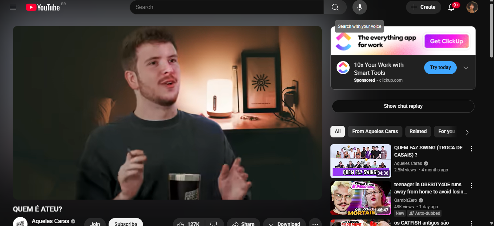
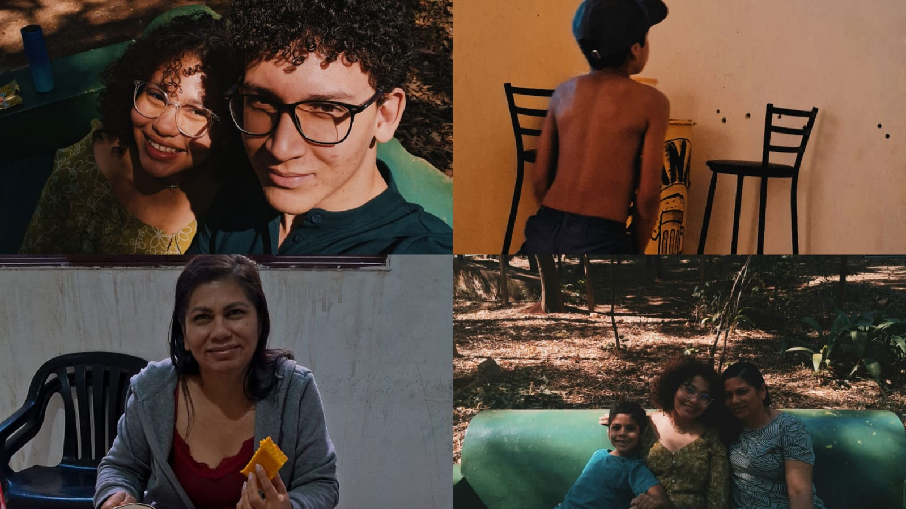
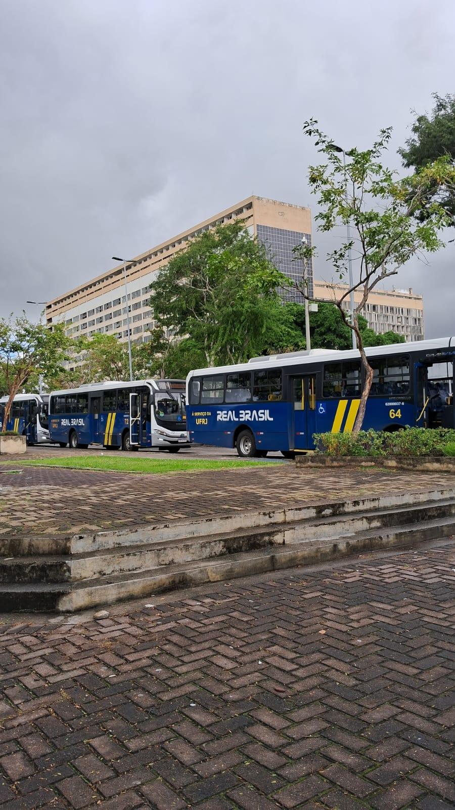
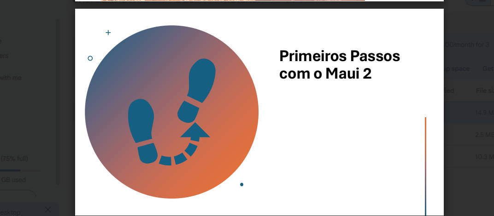

Sábado sem nada
05 de julho de 2025
fiz uma edição de macacos para meu papel de parede.
Coisas aleatórias que vão acontecendo/ quero escrever
05 de julho de 2025
fiz uma edição de macacos para meu papel de parede.
06 de julho de 2025
Estou com problemas para dormi então acordei tarde, as vezes acordo com vontade de cozinha e hoje foi um desses dias, pela primeira vez fiz assado de panela, omg, como ficou bom. Também estudei calcúlo espeficiamente derivadas, tenho uma prova na terça, iria ser segunda, mas por conta da reunião do BRICS foi remarcado, GRAÇAS A DEUS. Agora, 03:56 da manhã, estou assistindo aqueles caras o vídeo "Quem é ateu?", ainda não tenho uma opinião sobre, mas eles estão sendo pela primeira vez racionais, achava que todos eram meio burros.
30 de julho de 2025
Foi o último dia das minhas férias de meio do ano de duas semanas, antes parecia ser pouco, mas deu tempo de descansar. Fui visitar minha mãe em Ribeirão- Preto, foi legal, matar a saudade é sempre bom quando me mudei pro Rio de Janeiro para estudar, achava que iria passar bons tempos sem ver eles, mas as coisas não acontece da nossa forma, e graças a Deus. Com isso percebo o quanto meus planos e pensamentos são limitados, nada comparado aos que Deus tem sobre minha vida.
11 de agosto de 2025
As aulas começaram dia 04 de agosto, mas normalmente os professores não dão aulas nas primeiras semanas, então minha primeira aula de verdade foi dia 11, foi uma aula de Inteligência artificial, bem interessante, porém foi a primeira aula, bem introdutória.
18 de agosto de 2025
Não é novidade que na faculdade em algumas ocasiões eu teria que estudar sozinha, pois bem, tenho uma matéria que se chama software para smartphone vou ter que aprender ela sozinha por enquanto, o que não vai ser um problema, pois ela é empolgante, vamos programar em c#, e o melhor é que temos que fazer um projeto, só pelo fato de que não sei programar muito deveria me assustar, mas são tentativas de erros e acertos, com bastante tempo, possa ser que não me frustre, passo mais atualizações depois.
19 de agosto de 2025
Tem dias que aparentemente meu corpo não está carregando apenas ele, nesses dias é dificil sair da cama. Mas hoje eu dei um grande avanço no meu site pessoal, está 97% pronto e agora estou pretendo fazer outros projetos
para colocar nele e mais cursos também.
Estou pretendendo me aproximar mais de Deus, sinto falta dele e perceber que eu me afastei por coisas tão... do dia a dia, me faz pensar que por mais que eu tenha nascido em um lar cristão, berço de ouro como diz minha mãe,
eu ainda não cheguei nem em 20% da minha caminhada com cristo.